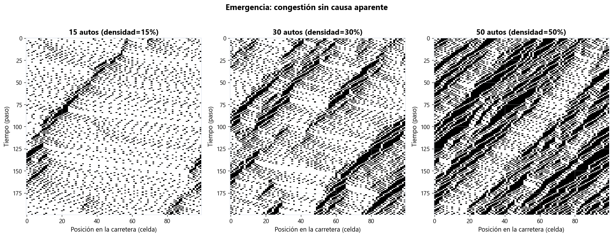
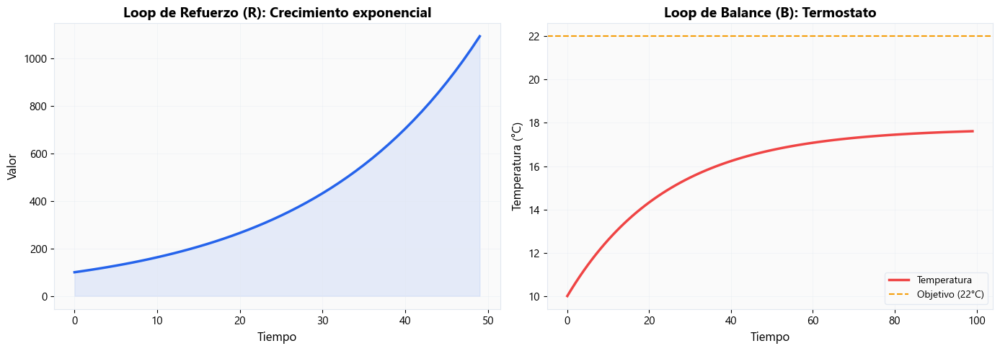
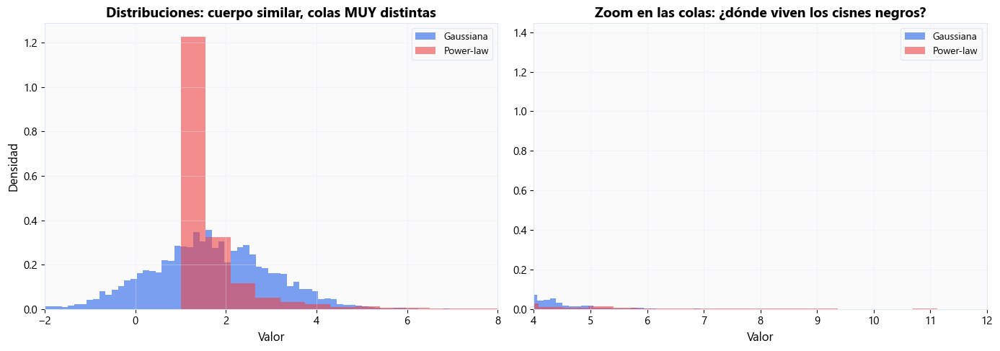
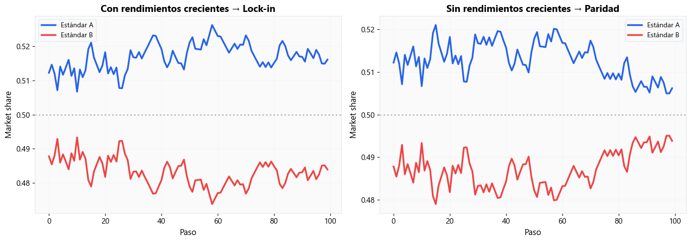
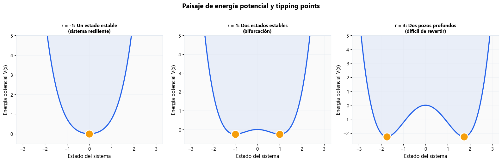
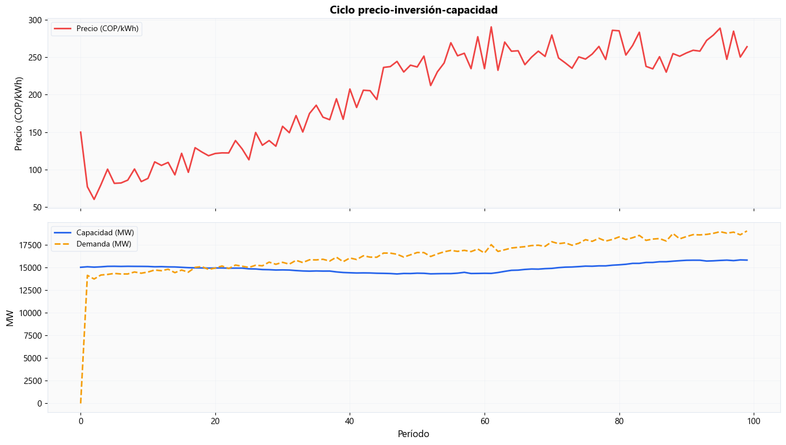
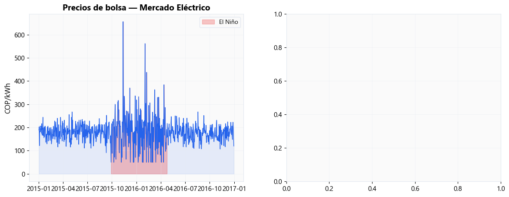
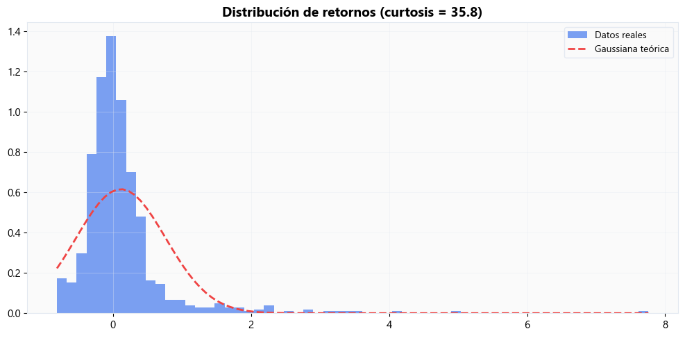
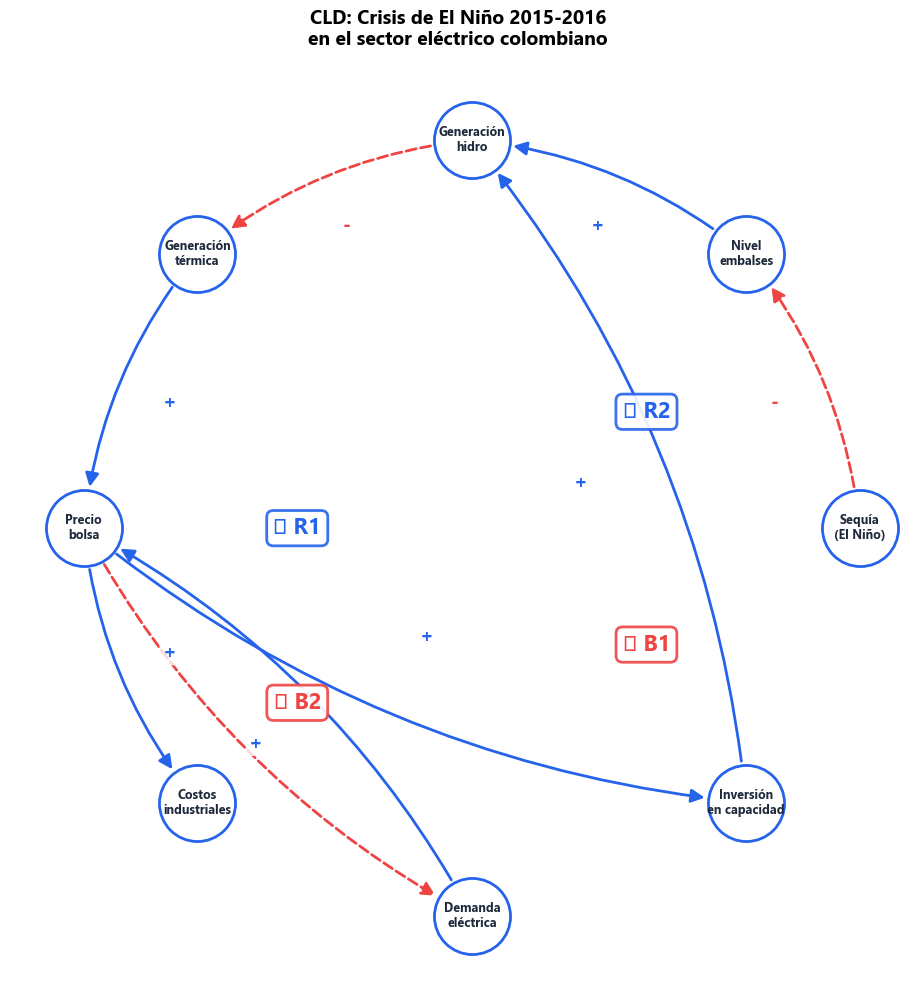
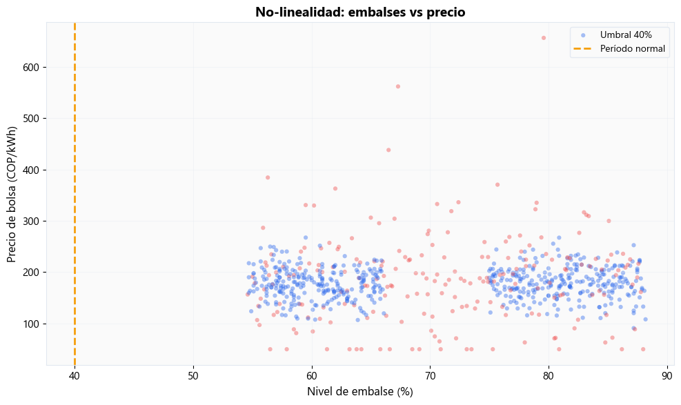

Semana 1: Complejidad — ¿Por qué los sistemas nos sorprenden?#
MISE Systems Analytics | Universidad de los Andes
“Un sistema complejo es aquel donde el todo es distinto a la suma de las partes.” — Herbert Simon
Objetivos de aprendizaje#
Identificar propiedades emergentes, retroalimentación y no-linealidad
Distinguir distribuciones gaussianas de distribuciones de cola pesada (fat tails)
Reconocer tipping points, lock-in y dependencia de camino
Construir Diagramas de Lazo Causal (CLD) básicos
Nivel |
Símbolo |
Contenido |
|---|---|---|
Intuición |
Nivel 1 — |
Simulaciones interactivas de conceptos fundamentales |
Energía |
Nivel 2 — |
Aplicaciones al sector eléctrico colombiano |
Profesional |
Nivel 3 — |
Lecturas y conexiones con la frontera del conocimiento |
import sys
sys.path.insert(0, '.')
from mise_utils import viz, complexity, energy_data
from mise_utils.viz import COLORS, apply_mise_style
import numpy as np
import matplotlib.pyplot as plt
apply_mise_style()
print("Módulos cargados correctamente")
Módulos cargados correctamente
Nivel 1 — Nivel 1: Intuición — Conceptos fundamentales#
1.1 Emergencia: el juego del tráfico#
Imagina una autopista circular con autos que siguen reglas simples:
Acelerar hasta la velocidad máxima
Frenar si el auto de adelante está cerca
Frenado aleatorio (distracción, imprudencia)
¿Qué pasa cuando aumentamos la densidad de autos?
fig, axes = plt.subplots(1, 3, figsize=(16, 6))
for i, n_autos in enumerate([15, 30, 50]):
resultado = complexity.simular_trafico(n_autos=n_autos, n_celdas=100)
complexity.plot_diagrama_espacio_tiempo(resultado, ax=axes[i])
axes[i].set_title(f"{n_autos} autos (densidad={resultado['densidad']:.0%})")
plt.suptitle("Emergencia: congestión sin causa aparente",
fontsize=15, fontweight="bold", y=1.02)
plt.tight_layout()
plt.show()

Insight: Insight: Con pocos autos (15%), el tráfico fluye libre. Con densidad media (30%), aparecen atascos fantasma — ondas de congestión que viajan hacia atrás. Nadie frenó primero; el atasco emerge de las interacciones locales. Esto es emergencia (emergence).
1.2 Retroalimentación: bola de nieve vs termostato#
Dos tipos fundamentales de feedback:
Refuerzo ®: más → más (crecimiento exponencial)
Balance (B): desviación → corrección (búsqueda de meta) Nivel 3 —
fig, axes = plt.subplots(1, 2, figsize=(14, 5))
# Loop de refuerzo
resultado_r = complexity.simular_feedback_refuerzo(tasa_crecimiento=0.05)
axes[0].plot(resultado_r['t'], resultado_r['valor'],
color=COLORS['primary'], linewidth=2.5)
axes[0].set_title('Loop de Refuerzo (R): Crecimiento exponencial')
axes[0].set_xlabel('Tiempo'); axes[0].set_ylabel('Valor')
axes[0].fill_between(resultado_r['t'], resultado_r['valor'],
alpha=0.1, color=COLORS['primary'])
# Loop de balance
resultado_b = complexity.simular_termostato(temp_objetivo=22, temp_inicial=10)
axes[1].plot(resultado_b['t'], resultado_b['temperatura'],
color=COLORS['danger'], linewidth=2.5, label='Temperatura')
axes[1].axhline(y=22, color=COLORS['accent'], linestyle='--',
linewidth=1.5, label='Objetivo (22°C)')
axes[1].set_title('Loop de Balance (B): Termostato')
axes[1].set_xlabel('Tiempo'); axes[1].set_ylabel('Temperatura (°C)')
axes[1].legend()
plt.tight_layout(); plt.show()

Insight: Insight: Los loops de refuerzo producen crecimiento (o colapso) exponencial — la “bola de nieve”. Los loops de balance buscan una meta, como un termostato. Todo sistema complejo es una combinación de ambos tipos.
1.3 Cisnes negros: ¿sus datos son gaussianos?#
La distribución Gaussiana (normal) asume que los eventos extremos son prácticamente imposibles. Pero en sistemas complejos, las distribuciones de cola pesada (fat tails) hacen que los “cisnes negros” sean mucho más frecuentes.
muestras = complexity.generar_muestras_comparacion(n=5000)
fig, axes = plt.subplots(1, 2, figsize=(14, 5))
axes[0].hist(muestras['gaussiana'], bins=80, density=True,
alpha=0.6, color=COLORS['primary'], label='Gaussiana')
axes[0].hist(muestras['power_law'], bins=80, density=True,
alpha=0.6, color=COLORS['danger'], label='Power-law')
axes[0].set_xlim(-2, 8)
axes[0].set_title('Distribuciones: cuerpo similar, colas MUY distintas')
axes[0].legend(); axes[0].set_xlabel('Valor'); axes[0].set_ylabel('Densidad')
axes[1].hist(muestras['gaussiana'], bins=100, density=True,
alpha=0.6, color=COLORS['primary'], label='Gaussiana')
axes[1].hist(muestras['power_law'], bins=100, density=True,
alpha=0.6, color=COLORS['danger'], label='Power-law')
axes[1].set_xlim(4, 12)
axes[1].set_title('Zoom en las colas: ¿dónde viven los cisnes negros?')
axes[1].legend(); axes[1].set_xlabel('Valor')
plt.tight_layout(); plt.show()

tabla = complexity.tabla_probabilidades_extremas()
print("Probabilidad de eventos extremos: Gaussiana vs Power-law\n")
print(tabla.to_string(index=False))
Probabilidad de eventos extremos: Gaussiana vs Power-law
σ P(Gaussiana) P(Power-law) Ratio (PL/G)
3σ 1.35e-03 1.07e-02 8×
4σ 3.17e-05 6.22e-03 196×
5σ 2.87e-07 3.98e-03 13888×
6σ 9.87e-10 2.73e-03 2763630×
Insight: Insight: Un evento de 6σ bajo la Gaussiana ocurre ~1 vez cada mil millones. Bajo una distribución de cola pesada, ocurre miles de veces más frecuentemente. Si modelamos el mundo real con campanas de Gauss cuando los datos tienen colas pesadas, subestimamos enormemente los riesgos.
1.4 Lock-in: ¿por qué todos usamos QWERTY?#
Dependencia de camino (path dependency): pequeñas ventajas iniciales pueden amplificarse hasta dominar el mercado — aunque la alternativa sea objetivamente mejor.
Compare dos escenarios:
Con rendimientos crecientes: el que gana un poco, gana más
Nivel 2 — Sin rendimientos crecientes: cada agente elige al azar
fig, axes = plt.subplots(1, 2, figsize=(14, 5))
# Con rendimientos crecientes
resultado_ir = complexity.simular_lockin(rendimientos_crecientes=True, seed=42)
axes[0].plot(resultado_ir['t'], resultado_ir['share_A'],
color=COLORS['primary'], linewidth=2.5, label='Estándar A')
axes[0].plot(resultado_ir['t'], resultado_ir['share_B'],
color=COLORS['danger'], linewidth=2.5, label='Estándar B')
axes[0].axhline(y=0.5, color='gray', linestyle=':', alpha=0.5)
axes[0].set_title('Con rendimientos crecientes → Lock-in')
axes[0].set_xlabel('Paso'); axes[0].set_ylabel('Market share'); axes[0].legend()
# Sin rendimientos crecientes
resultado_sin = complexity.simular_lockin(rendimientos_crecientes=False, seed=42)
axes[1].plot(resultado_sin['t'], resultado_sin['share_A'],
color=COLORS['primary'], linewidth=2.5, label='Estándar A')
axes[1].plot(resultado_sin['t'], resultado_sin['share_B'],
color=COLORS['danger'], linewidth=2.5, label='Estándar B')
axes[1].axhline(y=0.5, color='gray', linestyle=':', alpha=0.5)
axes[1].set_title('Sin rendimientos crecientes → Paridad')
axes[1].set_xlabel('Paso'); axes[1].set_ylabel('Market share'); axes[1].legend()
plt.tight_layout(); plt.show()

Insight: Insight: Con rendimientos crecientes (increasing returns), una ventaja inicial mínima se amplifica hasta el dominio total — lock-in. Ejemplos: QWERTY, VHS vs Betamax, Windows vs alternativas. En energía: ¿por qué es tan difícil abandonar los combustibles fósiles? La infraestructura existente genera su propia inercia.
1.5 Tipping points: la bola en la colina#
Un punto de inflexión (tipping point) es un umbral más allá del cual el sistema cambia abruptamente de estado. Visualicemos esto con un paisaje de energía potencial.
fig, axes = plt.subplots(1, 3, figsize=(16, 5))
for i, r in enumerate([-1.0, 1.0, 3.0]):
complexity.plot_tipping_point(r, ax=axes[i])
axes[0].set_title('r = -1: Un estado estable\n(sistema resiliente)', fontsize=11)
axes[1].set_title('r = 1: Dos estados estables\n(bifurcación)', fontsize=11)
axes[2].set_title('r = 3: Dos pozos profundos\n(difícil de revertir)', fontsize=11)
plt.suptitle('Paisaje de energía potencial y tipping points',
fontsize=15, fontweight='bold', y=1.02)
plt.tight_layout(); plt.show()

Insight: Insight: Cuando un sistema tiene dos pozos (estados estables), se necesita un empujón suficientemente grande para saltar de uno al otro. Pero cerca del tipping point, un cambio pequeño puede causar un salto irreversible. Ejemplos: colapso de ecosistemas, crisis financieras, transiciones energéticas.
Nivel 2 — Nivel 2: Energía — Aplicaciones al sector eléctrico colombiano#
2.1 El ciclo precio-inversión-capacidad#
El sector eléctrico colombiano exhibe un ciclo clásico de retroalimentación con retardos:
Precio alto → inversión en nuevas plantas → exceso de capacidad → precio bajo → no se invierte → escasez → precio alto → …
Este ciclo tiene un retardo de construcción (~5 años), lo que genera oscilaciones.
ciclo = energy_data.generar_ciclo_inversion_capacidad()
fig, axes = plt.subplots(2, 1, figsize=(14, 8), sharex=True)
axes[0].plot(ciclo['t'], ciclo['precio'], color=COLORS['danger'],
linewidth=2, label='Precio (COP/kWh)')
axes[0].set_ylabel('Precio (COP/kWh)'); axes[0].legend()
axes[0].set_title('Ciclo precio-inversión-capacidad')
axes[1].plot(ciclo['t'], ciclo['capacidad'], color=COLORS['primary'],
linewidth=2, label='Capacidad (MW)')
axes[1].plot(ciclo['t'], ciclo['demanda'], color=COLORS['accent'],
linewidth=2, linestyle='--', label='Demanda (MW)')
axes[1].set_ylabel('MW'); axes[1].set_xlabel('Período'); axes[1].legend()
plt.tight_layout(); plt.show()

Insight: Insight: El retardo entre la señal de precio y la entrada de nueva capacidad genera oscilaciones endógenas — un patrón clásico de dinámica de sistemas. La CREG intenta suavizar esto con mecanismos como el Cargo por Confiabilidad (CxC).
2.2 ¿Son gaussianos los precios de bolsa?#
Los precios del mercado eléctrico colombiano, especialmente durante El Niño, exhiben distribuciones de cola pesada. Comprobemos.
from scipy import stats
precios = energy_data.generar_precios_bolsa()
retornos = precios['precio_bolsa'].pct_change().dropna()
fig, axes = plt.subplots(1, 2, figsize=(14, 5))
# Serie temporal
axes[0].plot(precios['fecha'], precios['precio_bolsa'],
color=COLORS['primary'], linewidth=1)
axes[0].fill_between(precios['fecha'], precios['precio_bolsa'],
alpha=0.1, color=COLORS['primary'])
mask_nino = precios['es_nino']
axes[0].fill_between(precios['fecha'][mask_nino],
precios['precio_bolsa'][mask_nino],
alpha=0.3, color=COLORS['danger'], label='El Niño')
axes[0].set_title('Precios de bolsa — Mercado Eléctrico')
axes[0].set_ylabel('COP/kWh'); axes[0].legend()
<matplotlib.legend.Legend at 0x1cc881832d0>

# Histograma + test de normalidad
fig, ax = plt.subplots(1, 1, figsize=(10, 5))
ax.hist(retornos, bins=60, density=True, alpha=0.6,
color=COLORS['primary'], label='Datos reales')
x_range = np.linspace(retornos.min(), retornos.max(), 100)
ax.plot(x_range, stats.norm.pdf(x_range, retornos.mean(), retornos.std()),
color=COLORS['danger'], linewidth=2, linestyle='--',
label='Gaussiana teórica')
ax.set_title(f'Distribución de retornos (curtosis = {stats.kurtosis(retornos):.1f})')
ax.legend()
plt.tight_layout(); plt.show()
print(f"Curtosis: {stats.kurtosis(retornos):.1f} (Gaussiana = 0).")
print(f"¿Cola pesada? {'SÍ ' if stats.kurtosis(retornos) > 3 else 'NO '}")

Curtosis: 35.8 (Gaussiana = 0).
¿Cola pesada? SÍ
Insight: Insight: La curtosis alta confirma colas pesadas. Los precios de bolsa en Colombia NO son gaussianos — los eventos extremos (crisis de El Niño) son mucho más frecuentes de lo que predice una distribución normal. Los modelos de riesgo que asumen normalidad subestiman el riesgo real.
2.3 CLD interactivo: la crisis de El Niño 2015-2016#
Construyamos paso a paso un Diagrama de Lazo Causal (CLD) de la crisis de El Niño que afectó al sector eléctrico colombiano.
La sequía redujo los embalses → menos generación hidro → más generación térmica (costosa) → precios se dispararon → racionamiento parcial.
variables, flechas, lazos = complexity.cld_el_nino()
fig, ax = plt.subplots(1, 1, figsize=(12, 10))
complexity.dibujar_cld(
variables, flechas, lazos,
titulo='CLD: Crisis de El Niño 2015-2016\nen el sector eléctrico colombiano',
ax=ax)
plt.tight_layout(); plt.show()
C:\Users\ch.gomez171\AppData\Local\Temp\ipykernel_20372\3510976403.py:8: UserWarning: Glyph 8635 (\N{CLOCKWISE OPEN CIRCLE ARROW}) missing from current font.
plt.tight_layout(); plt.show()
C:\Users\ch.gomez171\AppData\Local\Temp\ipykernel_20372\3510976403.py:8: UserWarning: Glyph 8634 (\N{ANTICLOCKWISE OPEN CIRCLE ARROW}) missing from current font.
plt.tight_layout(); plt.show()
C:\Users\ch.gomez171\AppData\Local\Anaconda3new\Lib\site-packages\IPython\core\pylabtools.py:152: UserWarning: Glyph 8635 (\N{CLOCKWISE OPEN CIRCLE ARROW}) missing from current font.
fig.canvas.print_figure(bytes_io, **kw)
C:\Users\ch.gomez171\AppData\Local\Anaconda3new\Lib\site-packages\IPython\core\pylabtools.py:152: UserWarning: Glyph 8634 (\N{ANTICLOCKWISE OPEN CIRCLE ARROW}) missing from current font.
fig.canvas.print_figure(bytes_io, **kw)

Insight: Insight: El CLD revela que la crisis de El Niño no fue un evento simple sino un sistema de lazos interconectados:
R1 (Espiral de costos): sequía → menos hidro → más térmicas → precio sube
B1 (Respuesta demanda): precio alto → consumidores reducen demanda
R2 (Ciclo inversión): precio alto → más inversión → más capacidad futura
B2 (Feedback demanda-precio): menos demanda → precio baja
La política del sector busca fortalecer los lazos de balance y debilitar los de refuerzo destructivos.
2.4 Embalses vs precio: la no-linealidad#
La relación entre el nivel de embalses y el precio NO es lineal. Cuando los embalses caen por debajo del ~40%, el precio sube exponencialmente.
precios = energy_data.generar_precios_bolsa()
fig, ax = plt.subplots(1, 1, figsize=(10, 6))
colors_scatter = [COLORS['danger'] if x else COLORS['primary']
for x in precios['es_nino']]
ax.scatter(precios['nivel_embalse'], precios['precio_bolsa'],
c=colors_scatter, alpha=0.4, s=20, edgecolors='none')
ax.axvline(x=40, color=COLORS['accent'], linestyle='--',
linewidth=2, label='Umbral ~40%')
ax.set_xlabel('Nivel de embalse (%)')
ax.set_ylabel('Precio de bolsa (COP/kWh)')
ax.set_title('No-linealidad: embalses vs precio',
fontsize=14, fontweight='bold')
ax.legend(['Umbral 40%', 'Período normal', 'El Niño'])
plt.tight_layout(); plt.show()

Insight: Insight: Por encima del 40% de embalse, el precio se mantiene estable (~180 COP/kWh). Por debajo, sube exponencialmente. Esta no-linealidad es una característica fundamental de los sistemas complejos: los mismos inputs pueden producir outputs dramáticamente diferentes dependiendo del estado del sistema.
Nivel 3 — Nivel 3: Profesional — Conexiones con la frontera#
Esta sección no tiene código — es lectura para profundizar.
3.1 Sensitive Intervention Points (SIPs)#
Farmer et al. (2019) proponen que la transición energética tiene puntos de intervención sensibles — lugares donde una acción relativamente pequeña puede desencadenar cambios transformadores en todo el sistema.
Ejemplos de SIPs en energía:
Subsidios focalizados a tecnologías en el “punto de inflexión” de su curva de costos
Estándares regulatorios que crean masa crítica de adopción
Infraestructura de red que habilita nuevas configuraciones del mercado
Lectura: Farmer, J.D. et al. (2019). “Sensitive intervention points in the post-carbon transition.” Science, 364(6436), 132-134.
3.2 Modelado de riesgo con colas pesadas#
La Teoría de Valores Extremos (EVT — Extreme Value Theory) ofrece herramientas rigurosas para modelar las colas de las distribuciones sin asumir normalidad.
Conceptos clave:
Distribución de Pareto Generalizada (GPD): modela los excesos sobre un umbral
Value at Risk (VaR) y Expected Shortfall (ES): métricas de riesgo que deben calcularse con GPD, no con Gaussiana
Índice de cola (tail index): cuantifica qué tan pesada es la cola
En el sector energético colombiano, EVT es esencial para:
Dimensionar el Cargo por Confiabilidad (CxC)
Evaluar riesgos de contratos bilaterales
Planificar la capacidad de respaldo ante eventos extremos
Lectura: McNeil, A.J. et al. (2015). Quantitative Risk Management. Princeton University Press. Capítulos 4-5.
Cierre: ¿Qué aprendimos?#
Concepto |
Ejemplo energético |
Herramienta |
|---|---|---|
Emergencia |
Congestión en redes de transmisión |
Autómatas celulares |
Retroalimentación |
Ciclo precio-inversión |
Diagramas de lazo causal (CLD) |
Colas pesadas |
Precios de bolsa durante El Niño |
Estadística de valores extremos |
Lock-in |
Dependencia de combustibles fósiles |
Modelos de rendimientos crecientes |
Tipping points |
Colapso de embalses < 40% |
Paisajes de energía potencial |
Preview Semana 2: Redes#
La próxima semana pasamos de los conceptos de complejidad a las redes: ¿cómo está conectado el Sistema Interconectado Nacional? ¿Qué pasa si falla una subestación crítica? ¿Cómo se propagan las cascadas de fallas?
Preparen sus grafos — la red eléctrica colombiana les espera.